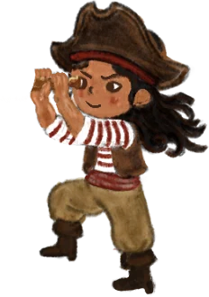

I'm SaGa! (Saumya Garg)
A UX designer and Artist building experiences that are functional and visually compelling.





The voyage so far
Every port that shaped how I design.
A UX designer and Artist building experiences that are functional and visually compelling.



Every port that shaped how I design.